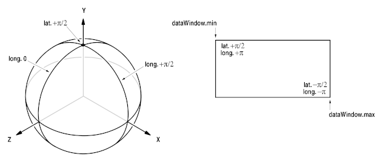
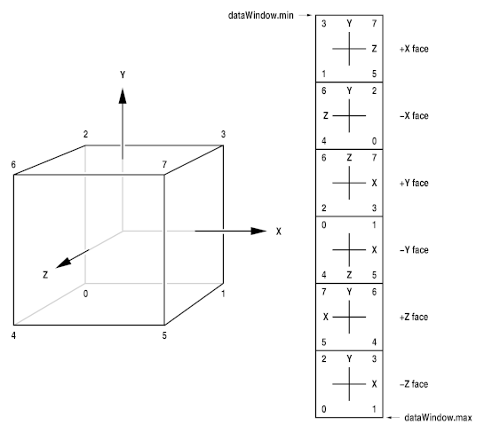

This document shows how to write C++ code that reads and writes OpenEXR image files. The text assumes that the reader is familiar with OpenEXR terms like "channel", "attribute", or "data window". For an explanation of those terms, see details.html. The OpenEXR source distribution contains a subdirectory, IlmImfExamples, with most of the code examples below. A Makefile is also provided, so that the examples can easily be compiled and run.
In an OpenEXR file, pixel data can be stored either as scan lines or as tiles.
Files that store pixels as tiles can also store multiresolution images.
For each of the two storage formats (scan line or tile-based),
the IlmImf library supports two reading and writing interfaces:
The first, fully general, interface allows access to arbitrary
channels, and supports many different in-memory pixel data layouts.
The second interface is easier to use, but limits access to
16-bit (HALF) RGBA (red, green, blue, alpha) channels,
and provides fewer options for laying out pixels in memory.
The interfaces for reading and writing OpenEXR files are implemented in the following eight C++ classes:
| tiles | scan lines | scan lines and tiles | |
|---|---|---|---|
| arbitrary channels | TiledInputFile |
InputFile |
|
TiledOutputFile |
OutputFile |
||
| RGBA only | TiledRgbaInputFile |
RgbaInputFile |
|
TiledRgbaOutputFile |
RgbaOutputFile |
The classes for reading scan-line-based images
(InputFile and RgbaInputFile)
can also be used to read tiled image files.
This way, programs that do not need support for tiled
or multiresolution images can always use the rather straightforward
scan-line interfaces, without worrying about complications related
to tiling and multiple resolutions.
When a multiresolution file is read via a scan-line interface,
only the highest-resolution version of the image is accessible.
1 Using the RGBA-only Interface for Scan-line-based Files
1.1 Writing an RGBA Image File
Writing a simple RGBA image file is fairly straightforward:
void
writeRgba1 (const char fileName[],
const Rgba *pixels,
int width,
int height)
{
RgbaOutputFile file (fileName, width, height, WRITE_RGBA); // 1
file.setFrameBuffer (pixels, 1, width); // 2
file.writePixels (height); // 3
}
RgbaOutputFile object, in line 1,
creates an OpenEXR header, sets the header's attributes, opens the
file with the specified name, and stores the header in the file.
The header's display window and data window are both set to
(0, 0) - (width-1, height-1).
The channel list contains four channels, R, G, B, and A, of type
HALF.
Line 2 specifies how the pixel data are laid out in memory. In our
example, the pixels pointer is assumed to point to the
beginning of an array of width*height pixels.
The pixels are represented as Rgba structs, which are
defined like this:
struct Rgba
{
half r; // red
half g; // green
half b; // blue
half a; // alpha (opacity)
};
setFrameBuffer() function takes three arguments,
base, xStride, and ystride.
To find the address of pixel (x,y), the
RgbaOutputFile object computes
base + x * xStride + y * yStride.
In this case, base, xStride and
yStride are set to pixels, 1, and
width, respectively, indicating that pixel
(x,y) can be found at memory address
pixels + 1 * x + width * y.
The call to writePixels(), in line 3, copies the image's
pixels from memory to the file. The argument to writePixels(),
height, specifies how many scan lines worth of data are copied.
Finally, returning from function writeRgba1() destroys the local
RgbaOutputFile object, thereby closing the file.
Why do we have to tell the writePixels() function how many
scan lines we want to write? Shouldn't the RgbaOutputFile
object be able to derive the number of scan lines from the data window?
The IlmImf library doesn't require writing all scan lines with a single
writePixels() call. Many programs want to write scan lines
individually, or in small blocks. For example, rendering computer-generated
images can take a significant amount of time, and many rendering programs
want to store each scan line in the image file as soon as all of the pixels
for that scan line are available. This way, users can look at a partial
image before rendering is finished.
The IlmImf library allows writing the scan lines in top-to-bottom or
bottom-to-top direction. The direction is defined by the file header's
line order attribute (INCREASING_Y or DECREASING_Y).
By default, scan lines are written top to bottom (INCREASING_Y).
You may have noticed that in the example above, there are no explicit
checks to verify that writing the file actually succeeded. If the IlmImf
library detects an error, it throws a C++ exception instead of returning
a C-style error code. With exceptions, error handling tends to be easier
to get right than with error return values. For instance, a program that
calls our writeRgba1() function can handle all possible error
conditions with a single try/catch block:
try
{
writeRgba1 (fileName, pixels, width, height);
}
catch (const std::exception &exc)
{
std::cerr << exc.what() << std::endl;
}
Now we are going to store a cropped image in a file. For this example,
we assume that we have a frame buffer that is large enough to hold an
image with width by height pixels, but only
part of the frame buffer contains valid data.
In the file's header, the size of the whole image is indicated by the
display window, (0, 0) - (width-1, height-1),
and the data window specifies the region for which valid pixel data exist.
Only the pixels in the data window are stored in the file.
void
writeRgba2 (const char fileName[],
const Rgba *pixels,
int width,
int height,
const Box2i &dataWindow)
{
Box2i displayWindow (V2i (0, 0), V2i (width - 1, height - 1));
RgbaOutputFile file (fileName, displayWindow, dataWindow, WRITE_RGBA);
file.setFrameBuffer (pixels, 1, width);
file.writePixels (dataWindow.max.y - dataWindow.min.y + 1);
}
RgbaOutputFile object is created, the data window and the
display window are explicitly specified, rather than being derived from
the image's width and height.
The number of scan lines stored in the file by writePixels()
is equal to the height of the data window, instead of the height of the
whole image.
Since we are using the default INCREASING_Y direction for
storing the scan lines in the file, writePixels() starts at
the top of the data window, at y coordinate dataWindow.min.y,
and proceeds toward the bottom, at y coordinate dataWindow.max.y.
Even though we are storing only part of the image in the file, the frame
buffer is still large enough to hold the whole image. In order to save
memory, a smaller frame buffer could have been allocated, just big enough
to hold the contents of the data window.
Assuming that the pixels were still stored in contiguous scan lines, with
the pixels pointer pointing to the pixel at the upper left
corner of the data window, at coordinates
(dataWindow.min.x, dataWindow.min.y), the arguments to
the setFrameBuffer() call would have to be to be changed as
follows:
int dwWidth = dataWindow.max.x - dataWindow.min.x + 1;
file.setFrameBuffer
(pixels - dataWindow.min.x - dataWindow.min.y * dwWidth, 1, dwWidth);
base + x * xStride + y * yStride
for pixel (dataWindow.min.x, dataWindow.min.y)
produces
pixels - dataWindow.min.x - dataWindow.min.y * dwWidth
+ dataWindow.min.x * 1
+ dataWindow.min.y * dwWidth
= pixels -
- dataWindow.min.x
- dataWindow.min.y * (dataWindow.max.x - dataWindow.min.x + 1)
+ dataWindow.min.x
+ dataWindow.min.y * (dataWindow.max.x - dataWindow.min.x + 1)
= pixels,
which is exactly what we want. Similarly, calculating the addresses
for pixels (dataWindow.min.x+1, dataWindow.min.y)
and (dataWindow.min.x, dataWindow.min.y+1)
yields pixels+1 and pixels+dwWidth, respectively.
Now we want to store an image in a file, and we want to add two extra data in the image file header: A string, called "comments", and a 4x4 matrix, called "cameraTransform".
void
writeRgba3 (const char fileName[],
const Rgba *pixels,
int width,
int height,
const char comments[],
const M44f &cameraTransform)
{
Header header (width, height);
header.insert ("comments", StringAttribute (comments));
header.insert ("cameraTransform", M44fAttribute (cameraTransform));
RgbaOutputFile file (fileName, header, WRITE_RGBA);
file.setFrameBuffer (pixels, 1, width);
file.writePixels (height);
}
setFrameBuffer() and writePixels() calls
are the same as in the previous examples, but construction of the
RgbaOutputFile object is different.
The constructors in the previous examples created a header on the fly,
and immediately stored it in the file. Here we explicitly create a
header, and add our own attributes to it.
When we create the RgbaOutputFile object, we tell the
constructor to use our header instead of creating its own.
In order to make it easier to exchange data between programs written
by different people, the IlmImf library defines a set of
standard attributes for commonly used data,
such as colorimetric information, time and place where an
image was recorded, or the owner of an image file's content.
For the current list of standard attributes, see the header file
ImfStandardAttributes.h.
The list is expected to grow over time, as OpenEXR users identify
new types of data they would like to represent in a standard format.
If you need to store some piece of information in an OpenEXR file header,
it is probably a good idea to check if a suitable standard attribute
exists, before you define a new attribute.
1.4 Reading an RGBA Image File
Reading an RGBA image is almost as easy as writing one:
void
readRgba1 (const char fileName[],
Array2D<Rgba> &pixels,
int &width,
int &height)
{
RgbaInputFile file (fileName);
Box2i dw = file.dataWindow();
width = dw.max.x - dw.min.x + 1;
height = dw.max.y - dw.min.y + 1;
pixels.resizeErase (height, width);
file.setFrameBuffer (&pixels[0][0] - dw.min.x - dw.min.y * width, 1, width);
file.readPixels (dw.min.y, dw.max.y);
}
RgbaInputFile object, passing the name of
the file to the constructor, opens the file and reads the file's header.
After asking the RgbaInputFile object for the file's data
window, we allocate a buffer for the pixels. For convenience, we use the
IlmImf library's Array2D class template (the call to
resizeErase() does the actual allocation).
The number of scan lines in the buffer is equal to the height of the
data window, and the number of pixels per scan line is equal to the
width of the data window. The pixels are represented as Rgba
structs.
Note that we ignore the display window; in a program that wanted to place the pixels in the data window correctly in an overall image, the display window would have to be taken into account.
Just as for writing a file, calling setFrameBuffer() tells
the RgbaInputFile object how to access individual pixels
in the buffer
(see also section 1.2, Writing a Cropped Image).
Calling readPixels() copies the pixel data from the file
into the buffer.
If one or more of the R, G, B, and A channels are missing in the file,
the corresponding field in the pixels is filled with an appropriate
default value. The default value for R, G and B is 0.0,
or black; the default value for A is 1.0, or opaque.
Finally, returning from function readRgba1() destroys the
local RgbaInputFile object, thereby closing the file.
Unlike the RgbaOutputFile's writePixels()
method, readPixels() has two arguments.
Calling readPixels(y1,y2) copies the pixels
for all scan lines with y coordinates from y1 to
y2 into the frame buffer. This allows access to the
the scan lines in any order. The image can be read all at once,
one scan line at a time, or in small blocks of a few scan lines.
It is also possible to skip parts of the image.
Note that even though random access is possible, reading the scan lines
in the same order as they were written, is more efficient. Random access
to the file requires seek operations, which tend to be slow.
Calling the RgbaInputFile's lineOrder() method returns the
order in which the scan lines in the file were written
(INCREASING_Y or DECREASING_Y).
If successive calls to readPixels() access the scan lines in the right
order, the IlmImf library reads the file as fast as possible, without
seek operations.
1.5 Reading an RGBA Image File in Chunks
The following shows how to read an RGBA image in blocks of a few scan lines. This is useful for programs that want to process high-resolution images without allocating allocating enough memory to hold the complete image. Those programs typically read a few scan lines worth of pixels into a memory buffer, process the pixels, and store them in another file. The buffer is then re-used for the next set of scan lines. Image operations like color-correction or compositing ("A over B") are very easy to do incrementally this way. With clever buffering of a few extra scan lines, incremental versions of operations that require access to neighboring pixels, like blurring or sharpening, are also possible.
void
readRgba2 (const char fileName[])
{
RgbaInputFile file (fileName);
Box2i dw = file.dataWindow();
int width = dw.max.x - dw.min.x + 1;
int height = dw.max.y - dw.min.y + 1;
Array2D<Rgba> pixels (10, width);
while (dw.min.y <= dw.max.y)
{
file.setFrameBuffer (&pixels[0][0] - dw.min.x - dw.min.y * width,
1, width);
file.readPixels (dw.min.y, min (dw.min.y + 9, dw.max.y));
// processPixels (pixels)
dw.min.y += 10;
}
}
RgbaInputFile object. Then we allocate a memory buffer
that is just large enough to hold ten complete scan lines.
We call readPixels() to copy the pixels from the file
into our buffer, ten scan lines at a time.
Since we want to re-use the buffer for every block of ten scan lines,
we have to call setFramebuffer() before each
readPixels() call, in order to associate memory address
&pixels[0][0] first with pixel coordinates
(dw.min.x, dw.min.y), then with
(dw.min.x, dw.min.y+10),
(dw.min.x, dw.min.y+20) and so on.
In section 1.3, we showed how to store custom attributes in the image file header. Here we show how to test whether a given file's header contains particular attributes, and how to read those attributes' values.
void
readHeader (const char fileName[])
{
RgbaInputFile file (fileName);
const StringAttribute *comments =
file.header().findTypedAttribute <StringAttribute> ("comments");
const M44fAttribute *cameraTransform =
file.header().findTypedAttribute <M44fAttribute> ("cameraTransform");
if (comments)
cout << "comments\n " << comments->value() << endl;
if (cameraTransform)
cout << "cameraTransform\n" << cameraTransform->value() << flush;
}
RgbaInputFile
object. Calling findTypedAttribute<T>(n) searches the
header for an attribute with type T and name n.
If a matching attribute is found, findTypedAttribute() returns
a pointer to the attribute.
If the header contains no attribute with name n, or if the
header contains an attribute with name n, but the attribute's
type is not T, findAttribute() returns
0.
Once we have pointers to the attributes we were looking for, we can
access their values by calling the attributes' value() methods.
In this example, we handle the possibility that the attributes we
want may not exist by explicitly checking for 0 pointers.
Sometimes it is more convenient to rely on exceptions instead.
Function typedAttribute(), a variation of
findTypedAttribute(), also searches the header for
an attribute with a given name and type, but if the attribute
in question does not exist, typedAttribute() throws
an exception rather than returning 0.
Note that the pointers returned by findTypedAttribute()
point to data that are part of the RgbaInputFile object.
The pointers become invalid as soon as the RgbaInputFile
object is destroyed. Therefore, the following will not work:
void
readComments (const char fileName[], StringAttribute *&comments)
{
// error: comments pointer is invalid after this function returns
RgbaInputFile file (fileName);
comments = file.header().findTypedAttribute <StringAttribute> ("comments");
}
readComments() must copy the attribute's value before it returns;
for example, like this:
void
readComments (const char fileName[], string &comments)
{
RgbaInputFile file (fileName);
comments = file.header().typedAttribute<StringAttribute>("comments").value();
}
1.7 Luminance/Chroma and Gray-Scale Images
Writing an RGBA image file usually preserves the pixels without losing any data; saving an image file, and reading it back does not alter the pixels' R, G, B and A values. Most of the time, lossless data storage is exactly what we want, but sometimes file space or transmission bandwidth are limited, and we would like to reduce the size of our image files. It is often acceptable if the numbers in the pixels change slightly, as long as the image still looks just like the original.
The RGBA interface in the IlmImf library supports storing RGB data in luminance/chroma format. The R, G, and B channels are converted into a luminance channel, Y, and two chroma channels, RY and BY. The Y channel represents a pixel's brightness, and the two chroma channels represent its color. The human visual system's spatial resolution for color is much lower than the spatial resolution for brightness. This allows us to reduce the horizontal and vertical resolution of the RY and BY channels by a factor of two. The visual appearance of the image doesn't change, but the image occupies only half as much space, even before data compression is applied. (For every four pixels, we store four Y values, one RY value, and one BY value, instead of four R, four G, and four B values.)
When opening a file for writing, a program can select how it
wants the pixels to be stored. The constructors for class
RgbaOutputFile have an rgbaChannels
argument, which determines the set of channels in the file:
WRITE_RGB |
red, gren, blue |
WRITE_RGBA |
red, gren, blue, alpha |
WRITE_YC |
luminance, chroma |
WRITE_YCA |
luminance, chroma, alpha |
WRITE_Y |
luminance only |
WRITE_YA |
luminance, alpha |
WRITE_Y and WRITE_YA provide an efficient way
to store gray-scale images. The chroma channels for a gray-scale image
contain only zeroes, so they can be omitted from the file.
When an image file is opened for reading, class RgbaInputFile
automatically detects luminance/chroma images, and converts the pixels
back to RGB format.
2 Using the General Interface for Scan-line-based Files
This example demonstrates how to write an OpenEXR image file with two channels:
One channel, of type HALF, is called G, and the other,
of type FLOAT, is called Z.
The size of the image is width by height pixels.
The data for the two channels are supplied in two separate
buffers, gPixels and zPixels.
Within each buffer, the pixels of each scan line are contiguous in memory.
void
writeGZ1 (const char fileName[],
const half *gPixels,
const float *zPixels,
int width,
int height)
{
Header header (width, height); // 1
header.channels().insert ("G", Channel (HALF)); // 2
header.channels().insert ("Z", Channel (FLOAT)); // 3
OutputFile file (fileName, header); // 4
FrameBuffer frameBuffer; // 5
frameBuffer.insert ("G", // name // 6
Slice (HALF, // type // 7
(char *) gPixels, // base // 8
sizeof (*gPixels) * 1, // xStride// 9
sizeof (*gPixels) * width)); // yStride// 10
frameBuffer.insert ("Z", // name // 11
Slice (FLOAT, // type // 12
(char *) zPixels, // base // 13
sizeof (*zPixels) * 1, // xStride// 14
sizeof (*zPixels) * width)); // yStride// 15
file.setFrameBuffer (frameBuffer); // 16
file.writePixels (height); // 17
}
(0, 0) - (width-1, height-1).
Lines 2 and 3 specify the names and types of the image channels that will be stored in the file.
Constructing an OutputFile object, in line 4, opens the file with
the specified name, and stores the header in the file.
Lines 5 through 16 tell the OutputFile object how
the pixel data for the image channels are laid out in memory.
After constructing a FrameBuffer object, a Slice
is added for each of the image file's channels.
A Slice describes the memory layout of one channel.
The constructor for the Slice object takes four arguments,
type, base, xStride,
and yStride.
type specifies the pixel data type
(HALF, FLOAT, or UINT);
the other three arguments define the memory address of
pixel (x,y) as
base + x * xStride + y * yStride.
Note that base is of type char*, and that offsets
from base are not implicitly multiplied by the size of an
individual pixel, as in the RGBA-only interface.
xStride and yStride must explictly
take the size of the pixels into account.
With the values specified in our example, the IlmImf library
computes the address of the G channel of pixel (x,y) like this:
(half*)((char*)gPixels + x * sizeof(half) * 1 + y * sizeof(half) * width)
= (half*)((char*)gPixels + x * 2 + y * 2 * width),
The address of the Z channel of pixel (x,y) is
(float*)((char*)zPixels + x * sizeof(float) * 1 + y * sizeof(float) * width)
= (float*)((char*)zPixels + x * 4 + y * 4 * width).
The writePixels() call in line 9 copies the image's pixels
from memory into the file.
As in the RGBA-only interface, the argument to writePixels()
specifies how many scan lines are copied into the file
(see section 1.1, Writing an RGBA Image File).
If the image file contains a channel for which the FrameBuffer
object has no corresponding Slice, then the pixels for that
channel in the file are filled with zeroes.
If the FrameBuffer object contains a Slice for
which the file has no channel, then the Slice is ignored.
Returning from function writeGZ1() destroys the local
OutputFile object, and closes the file.
Writing a cropped image using the general interface is analogous to
writing a cropped image using the RGBA-only interface, as shown in
section 1.2:
In the file's header, the data window is set explicitly, instead of
being generated automatically from the image's width and height.
The number of scan lines that are stored in the file is equal to
the height of the data window, instead of the height of the entire image.
As in section 1.2, the example code below assumes that the memory
buffers for the pixels are large enough to hold width
by height pixels, but only the region that corresponds
to the data window will be stored in the file.
For smaller memory buffers with room only for
the pixels in the data window, the base, xStride
and yStride arguments for the FrameBuffer
object's slices would have to be adjusted accordingly
(again, see section 1.2).
void
writeGZ2 (const char fileName[],
const half *gPixels,
const float *zPixels,
int width,
int height,
const Box2i &dataWindow)
{
Header header (width, height);
header.dataWindow() = dataWindow;
header.channels().insert ("G", Channel (HALF));
header.channels().insert ("Z", Channel (FLOAT));
OutputFile file (fileName, header);
FrameBuffer frameBuffer;
frameBuffer.insert ("G", // name
Slice (HALF, // type
(char *) gPixels, // base
sizeof (*gPixels) * 1, // xStride
sizeof (*gPixels) * width)); // yStride
frameBuffer.insert ("Z", // name
Slice (FLOAT, // type
(char *) zPixels, // base
sizeof (*zPixels) * 1, // xStride
sizeof (*zPixels) * width)); // yStride
file.setFrameBuffer (frameBuffer);
file.writePixels (dataWindow.max.y - dataWindow.min.y + 1);
}
In this example, we read an OpenEXR image file, using the
IlmImf library's general interface. We assume that the file
contains two channels, R, and G, of type HALF, and one channel,
Z, of type FLOAT. If one of those channels is not present in
the image file, the corresponding memory buffer for the pixels
will be filled with an appropriate default value.
void
readGZ1 (const char fileName[],
Array2D<half> &rPixels,
Array2D<half> &gPixels,
Array2D<float> &zPixels,
int &width, int &height)
{
InputFile file (fileName);
Box2i dw = file.header().dataWindow();
width = dw.max.x - dw.min.x + 1;
height = dw.max.y - dw.min.y + 1;
rPixels.resizeErase (height, width);
gPixels.resizeErase (height, width);
zPixels.resizeErase (height, width);
FrameBuffer frameBuffer;
frameBuffer.insert ("R", // name
Slice (HALF, // type
(char *) (&rPixels[0][0] - // base
dw.min.x -
dw.min.y * width),
sizeof (rPixels[0][0]) * 1, // xStride
sizeof (rPixels[0][0]) * width,// yStride
1, 1, // x/y sampling
0.0)); // fillValue
frameBuffer.insert ("G", // name
Slice (HALF, // type
(char *) (&gPixels[0][0] - // base
dw.min.x -
dw.min.y * width),
sizeof (gPixels[0][0]) * 1, // xStride
sizeof (gPixels[0][0]) * width,// yStride
1, 1, // x/y sampling
0.0)); // fillValue
frameBuffer.insert ("Z", // name
Slice (FLOAT, // type
(char *) (&zPixels[0][0] - // base
dw.min.x -
dw.min.y * width),
sizeof (zPixels[0][0]) * 1, // xStride
sizeof (zPixels[0][0]) * width,// yStride
1, 1, // x/y sampling
FLT_MAX)); // fillValue
file.setFrameBuffer (frameBuffer);
file.readPixels (dw.min.y, dw.max.y);
}
InputFile object.
Using the Array2D class template, we allocate memory buffers for
the image's R, G and Z channels. The buffers are big enough to
hold all pixels in the file's data window.
Next, we create a FrameBuffer object, which describes our
buffers to the IlmImf library. For each image channel, we
add a slice to the FrameBuffer.
As usual, the slice's type, xStride,
and yStride describe the corresponding buffer's layout.
For the R channel, pixel (dw.min.x, dw.min.y) is at address
&rPixels[0][0].
By setting the type, xStride and yStride
of the corresponding Slice object as shown above, evaluating
base + x * xStride + y * yStride
for pixel (dw.min.x, dw.min.y) produces
(char*)(&rPixels[0][0] - dw.min.x - dw.min.y * width)
+ dw.min.x * sizeof (rPixels[0][0]) * 1
+ dw.min.y * sizeof (rPixels[0][0]) * width
= (char*)&rPixels[0][0]
- dw.min.x * sizeof (rPixels[0][0])
- dw.min.y * sizeof (rPixels[0][0]) * width
+ dw.min.x * sizeof (rPixels[0][0])
+ dw.min.y * sizeof (rPixels[0][0]) * width
= &rPixels[0][0]
The address calculations for pixels
(dw.min.x+1, dw.min.y) and
(dw.min.x, dw.min.y+1) produce
&rPixels[0][0]+1 and
&rPixels[0][0]+width, which is equivalent to
&rPixels[0][1] and
&rPixels[1][0].
Each Slice has a fillValue.
If the image file does not contain
an image channel for the Slice, then the corresponding memory
buffer will be filled with the fillValue.
The Slice's remaining two parameters,
xSampling and ySampling
are used for images where some of the channels are subsampled,
for instance, the RY and BY channels in luminance/chroma images.
(see section 1.7, Luminance/Chroma and Gray-scale Images).
Unless an image contains subsampled
channels, xSampling and ySampling
should always be set to 1.
For details, see header files ImfFrameBuffer.h and ImfChannelList.h.
After describing our memory buffers' layout, we call
readPixels() to copy the pixel data from
the file into the buffers.
Just as with the RGBA-only interface, readPixels()
allows random-access to the scan lines in the file
(see section 1.4, Reading an RGBA Image File).
2.4 Interleaving Image Channels in the Frame Buffer
Here is a variation of the previous example. We are reading an image file, but instead of storing each image channel in a separate memory buffer, we interleave the channels in a single buffer. The buffer is an array of structs, which are defined like this:
typedef struct GZ
{
half g;
float z;
};
base, xStride and
yStride for the Slices in the
FrameBuffer object are computed:
void
readGZ2 (const char fileName[],
Array2D<GZ> &pixels,
int &width, int &height)
{
InputFile file (fileName);
Box2i dw = file.header().dataWindow();
width = dw.max.x - dw.min.x + 1;
height = dw.max.y - dw.min.y + 1;
int dx = dw.min.x;
int dy = dw.min.y;
pixels.resizeErase (height, width);
FrameBuffer frameBuffer;
frameBuffer.insert ("G",
Slice (HALF,
(char *) &pixels[-dy][-dx].g,
sizeof (pixels[0][0]) * 1,
sizeof (pixels[0][0]) * width));
frameBuffer.insert ("Z",
Slice (FLOAT,
(char *) &pixels[-dy][-dx].z,
sizeof (pixels[0][0]) * 1,
sizeof (pixels[0][0]) * width));
file.setFrameBuffer (frameBuffer);
file.readPixels (dw.min.y, dw.max.y);
}
2.5 Which Channels are in a File?
In functions readGZ1() and readGZ2(), above,
we simply assumed that the files we were trying to read contained a
certain set of channels.
We relied on the IlmImf library to do "something reasonable" in case
our assumption was not true.
Sometimes we want to know exactly what channels are in an image file
before reading any pixels, so that we can do what we think is appropriate.
The file's header contains the file's channel list. Using STL-style iterators, we can iterate over the channels:
const ChannelList &channels = file.header().channels();
for (ChannelList::ConstIterator i = channels.begin(); i != channels.end(); ++i)
{
const Channel &channel = i->second;
// ...
}
[] operator, or with the findChannel()
function:
const ChannelList &channels = file.header().channels();
const Channel &channel = channelList["G"];
const Channel *channelPtr = channelList.findChannel("G");
[] operator and
findChannel() function is how errors are handled:
If the channel in question is not present,
findChannel() returns 0;
the [] operator throws an exception.
3 Tiles, Levels and Level Modes
A single tiled OpenEXR file can hold multiple versions of an image, each with a different resolution. Each version is called a "level". A tiled file's "level mode" defines how many levels are stored in the file. There are three different level modes:
| name | description |
|---|---|
ONE_LEVEL |
The file contains only a single, full-resolution level.
A ONE_LEVEL image file is equivalent to a
scan-line-based file;
the only difference is that the pixels are accessed by tile
instead of by scan line.
|
MIPMAP_LEVELS |
The file contains multiple levels.
The first level holds the image at full resolution.
Each successive level is half the resolution of the
previous level in x and y direction.
The last level contains only a single pixel.
MIPMAP_LEVELS files are used for
texture-mapping and similar applications.
|
RIPMAP_LEVELS |
Like MIPMAP_LEVELS, but with more levels.
The levels include all combinations of reducing the
resolution of the image by powers of two independently
in x and y direction. Used for texture mapping, like
MIPMAP_LEVELS; the additional levels
in a RIPMAP_LEVELS file can help to
accelerate anisotropic filtering during texture lookups.
|
In MIPMAP_LEVELS and RIPMAP_LEVELS mode, the size (width or height) of each level is computed by halving the size of the level with the next higher resolution. If the size of the higher-resolution level is odd, then the size of the lower-resolution level must be rounded up or down in order to avoid arriving at a non-integer width or height. The rounding direction is determined by the file's "level size rounding mode".
Within each level, the pixels of the image are stored in a two-dimensional array of tiles. The tiles in an OpenEXR file can be any rectangular shape, but all tiles in a file have the same size. This means that lower-resolution levels contain fewer, rather than smaller, tiles.
An OpenEXR file's level mode and rounding mode, and the size of the tiles
are stored in an attribute in the file header. The value of this
attribute is a TileDescription object:
enum LevelMode
{
ONE_LEVEL,
MIPMAP_LEVELS,
RIPMAP_LEVELS
};
enum LevelRoundingMode
{
ROUND_DOWN,
ROUND_UP
};
class TileDescription
{
public:
unsigned int xSize; // size of a tile in the x dimension
unsigned int ySize; // size of a tile in the y dimension
LevelMode mode;
LevelRoundingMode roundingMode;
... // (methods omitted)
};
4 Using the RGBA-only Interface for Tiled Files
4.1 Writing a Tiled RGBA Image File with One Resolution Level
Writing a tiled RGBA image with a single level is easy:
void
writeTiledRgbaONE1 (const char fileName[],
const Rgba *pixels,
int width, int height,
int tileWidth, int tileHeight)
{
TiledRgbaOutputFile out (fileName,
width, height, // image size
tileWidth, tileHeight, // tile size
ONE_LEVEL, // level mode
ROUND_DOWN, // rounding mode
WRITE_RGBA); // channels in file // 1
out.setFrameBuffer (&pixels[0][0], 1, width); // 2
for (int tileY = 0; tileY < out.numYTiles (); ++tileY) // 3
for (int tileX = 0; tileX < out.numXTiles (); ++tileX) // 4
out.writeTile (tileX, tileY); // 5
}
Opening the file, and defining the pixel data layout in memory are done in almost the same way as for scan-line-based files:
Construction of the TiledRgbaOutputFile object, in line 1,
creates an OpenEXR header, sets the header's attributes, opens the file
with the specified name, and stores the header in the file.
The header's display window and data window are both set to
(0, 0) - (width-1, height-1).
The size of each tile in the file will be
tileWidth by tileHeight pixels.
The channel list contains four channels, R, G, B, and A,
of type HALF.
Line 2 specifies how the pixel data are laid out in memory.
The arithmetic involved in calculating the memory address of
a specific pixel is the same as for the scan-line-based
interface (see section 1.1).
We assume that the pixels pointer points to an array
of width*height pixels, which contains the entire image.
Lines 3 and 4 loop over all tiles within the image.
The TiledRgbaOutputFile's numXTiles() method
returns the number of tiles in the x direction,
and similarly, the numYTiles() method
returns the number of tiles in the y dimension.
During these loops, line 5 writes out each tile in the image.
This simple method works well when enough memory is available to allocate a frame buffer for the entire image. When allocating a frame buffer for the whole image is not desirable, for example, because the image is very large, a smaller frame buffer can be used. Even a frame buffer that can hold only a single tile is sufficient, as demonstrated in the following example:
void
writeTiledRgbaONE2 (const char fileName[],
int width, int height,
int tileWidth, int tileHeight)
{
TiledRgbaOutputFile out (fileName,
width, height, // image size
tileWidth, tileHeight, // tile size
ONE_LEVEL, // level mode
ROUND_DOWN, // rounding mode
WRITE_RGBA); // channels in file // 1
Array2D<Rgba> pixels (tileHeight, tileWidth); // 2
for (int tileY = 0; tileY < out.numYTiles (); ++tileY) // 3
{
for (int tileX = 0; tileX < out.numXTiles (); ++tileX) // 4
{
Box2i range = out.dataWindowForTile (tileX, tileY); // 5
generatePixels (pixels, width, height, range); // 6
out.setFrameBuffer (&pixels[-range.min.y][-range.min.x],
1, // xStride
tileWidth); // yStride // 7
out.writeTile (tileX, tileY); // 8
}
}
}
In line 2 we allocate a pixels array with
tileWidth*tileHeight elements, which is just enough for one tile.
Line 5 computes the data window range for each tile, that is,
the set of pixel coordinates covered by the tile.
The generatePixels() function, in line 6, fills the
pixels array with one tile's worth of image data.
The same pixels array is reused for all tiles.
We have to call setFrameBuffer(), in line 7, before
writing each tile so that the pixels in the array are accessed
properly in the writeTile() call in line 8.
Again, the address arithmetic to access the pixels, is the same
as for scan-line-based files. The values for the
base, xStride, and yStride
arguments to the setFrameBuffer() call must be chosen
so that evaluating the expression
base + x * xStride + y * yStride
produces the address of the pixel with coordinates (x,y).
4.2 Writing a Tiled RGBA Image File with Mipmap Levels
In order to store a multiresolution image in a file, we can allocate a frame buffer large enough for the highest-resolution level, (0,0), and reuse it for all levels:
void
writeTiledRgbaMIP1 (const char fileName[],
int width, int height,
int tileWidth, int tileHeight)
{
TiledRgbaOutputFile out (fileName,
width, height,
tileWidth, tileHeight,
MIPMAP_LEVELS,
ROUND_DOWN,
WRITE_RGBA); // 1
Array2D<Rgba> pixels (height, width); // 2
out.setFrameBuffer (&pixels[0][0], 1, width); // 3
for (int level = 0; level < out.numLevels (); ++level) // 4
{
generatePixels (pixels, width, height, level); // 5
for (int tileY = 0; tileY < out.numYTiles (level); ++tileY) // 6
for (int tileX = 0; tileX < out.numXTiles (level); ++tileX) // 7
out.writeTile (tileX, tileY, level); // 8
}
}
The main difference here is the use of MIPMAP_LEVELS
in line 1 for the TiledRgbaOutputFile constructor.
This signifies that the file will contain multiple levels,
each level being a factor of 2 smaller in both dimensions than
the previous level.
Mipmap images contain n levels, with level numbers
(0,0), (1,1), ... (n-1,n-1),
where
n = floor (log (max (width, height)) / log (2)) + 1
if the level size rounding mode is ROUND_DOWN, or
n = ceil (log (max (width, height)) / log (2)) + 1
if the level size rounding mode is ROUND_UP.
Note that even though level numbers are pairs of integers, (lx,ly),
only levels where lx equals ly are used in MIPMAP_LEVELS files.
Line 2 allocates a pixels array with
width by height pixels,
big enough to hold the highest-resolution level.
In addition to looping over all tiles (lines 6 and 7),
we must loop over all levels in the image (line 4).
numLevels() returns the number of levels, n,
in our mipmapped image.
Since the tile sizes remain the same in all levels,
the number of tiles in both dimensions varies between levels.
numXTiles() and numYTiles()
take a level number as an optional argument,
and return the number of tiles in the x or y direction
for the corresponding level.
Line 5 fills the pixels array with appropriate
data for each level.
As with ONE_LEVEL images, we can choose to only allocate a
frame buffer for a single tile and reuse it for all tiles in the image:
void
writeTiledRgbaMIP2 (const char fileName[],
int width, int height,
int tileWidth, int tileHeight)
{
TiledRgbaOutputFile out (fileName,
width, height,
tileWidth, tileHeight,
MIPMAP_LEVELS,
ROUND_DOWN,
WRITE_RGBA);
Array2D<Rgba> pixels (tileHeight, tileWidth);
for (int level = 0; level < out.numLevels (); ++level)
{
for (int tileY = 0; tileY < out.numYTiles (level); ++tileY)
{
for (int tileX = 0; tileX < out.numXTiles (level); ++tileX)
{
Box2i range = out.dataWindowForTile (tileX, tileY, level);
generatePixels (pixels, width, height, range, level);
out.setFrameBuffer (&pixels[-range.min.y][-range.min.x],
1, // xStride
tileWidth); // yStride
out.writeTile (tileX, tileY, level);
}
}
}
}
The structure of this code is the same as for writing a ONE_LEVEL
image using a tile-sized frame buffer, but we have to loop over more tiles.
Also, dataWindowForTile() takes an additional level
argument to determine the pixel range for the tile at the specified level.
4.3 Writing a Tiled RGBA Image File with Ripmap Levels
The ripmap level mode allows for storing all combinations of reducing the resolution of the image by powers of two independently in both dimensions. Ripmap files contains nx*ny levels, with level numbers:
(0, 0), (1, 0), ... (nx-1, 0),
(0, 1), (1, 1), ... (nx-1, 1),
...
(0,ny-1), (1,ny-1), ... (nx-1,ny-1)
where
nx = floor (log (width) / log (2)) + 1
ny = floor (log (height) / log (2)) + 1
if the level size rounding mode is ROUND_DOWN, or
nx = ceil (log (width) / log (2)) + 1
ny = ceil (log (height) / log (2)) + 1
if the level size rounding mode is ROUND_UP.
With a frame buffer that is large enough to hold level (0,0), we can write a ripmap file like this:
void
writeTiledRgbaRIP1 (const char fileName[],
int width, int height,
int tileWidth, int tileHeight)
{
TiledRgbaOutputFile out (fileName,
width, height,
tileWidth, tileHeight,
RIPMAP_LEVELS,
ROUND_DOWN,
WRITE_RGBA);
Array2D<Rgba> pixels (height, width);
out.setFrameBuffer (&pixels[0][0], 1, width);
for (int yLevel = 0; yLevel < out.numYLevels (); ++yLevel)
{
for (int xLevel = 0; xLevel < out.numXLevels (); ++xLevel)
{
generatePixels (pixels, width, height, xLevel, yLevel);
for (int tileY = 0; tileY < out.numYTiles (yLevel); ++tileY)
for (int tileX = 0; tileX < out.numXTiles (xLevel); ++tileX)
out.writeTile (tileX, tileY, xLevel, yLevel);
}
}
}
As for ONE_LEVEL and MIPMAP_LEVELS files,
the frame buffer doesn't have to be large enough to hold a whole level.
Any frame buffer big enough to hold at least a single tile will work.
4.4 Reading a Tiled RGBA Image File
Reading a tiled RGBA image file is done similarly to writing one:
void
readTiledRgba1 (const char fileName[],
Array2D<Rgba> &pixels,
int &width,
int &height)
{
TiledRgbaInputFile in (fileName);
Box2i dw = in.dataWindow();
width = dw.max.x - dw.min.x + 1;
height = dw.max.y - dw.min.y + 1;
int dx = dw.min.x;
int dy = dw.min.y;
pixels.resizeErase (height, width);
in.setFrameBuffer (&pixels[-dy][-dx], 1, width);
for (int tileY = 0; tileY < in.numYTiles(); ++tileY)
for (int tileX = 0; tileX < in.numXTiles(); ++tileX)
in.readTile (tileX, tileY);
}
TiledRgbaInputFile object
for the given file name.
Then we retrieve information about the data window in order
to create an appropriately sized frame buffer,
in this case large enough to hold the whole image at level (0,0).
After we set the frame buffer, we iterate over the tiles we
are interested in, and read them from the file.
This example only reads the highest-resolution level of the image. It can be extended to read all levels, for multiresolution images, by also iterating over all levels within the image, analogous to the examples in sections section 4.2 and 4.3.
5 Using the General Interface for Tiled Files
5.1 Writing a Tiled Image File
This example is a variation of the one in section 2.1.
We are writing a ONE_LEVEL image file
with two channels, G, and Z,
of type HALF, and FLOAT respectively,
but here the file is tiled instead of scan-line-based:
void
writeTiled1 (const char fileName[],
Array2D<GZ> &pixels,
int width, int height,
int tileWidth, int tileHeight)
{
Header header (width, height); // 1
header.channels().insert ("G", Channel (HALF)); // 2
header.channels().insert ("Z", Channel (FLOAT)); // 3
header.setTileDescription
(TileDescription (tileWidth, tileHeight, ONE_LEVEL)); // 4
TiledOutputFile out (fileName, header); // 5
FrameBuffer frameBuffer; // 6
frameBuffer.insert ("G", // name // 7
Slice (HALF, // type // 8
(char *) &pixels[0][0].g, // base // 9
sizeof (pixels[0][0]) * 1, // xStride // 10
sizeof (pixels[0][0]) * width)); // yStride // 11
frameBuffer.insert ("Z", // name // 12
Slice (FLOAT, // type // 13
(char *) &pixels[0][0].z, // base // 14
sizeof (pixels[0][0]) * 1, // xStride // 15
sizeof (pixels[0][0]) * width)); // yStride // 16
out.setFrameBuffer (frameBuffer); // 17
for (int tileY = 0; tileY < out.numYTiles (); ++tileY) // 18
for (int tileX = 0; tileX < out.numXTiles (); ++tileX) // 19
out.writeTile (tileX, tileY); // 20
}
ONE_LEVEL for simplicity.
Line 5 opens the file and writes the header.
Lines 6 through 17 tell the TiledOutputFile
object the location and layout of the pixel data for each channel.
Finally, lines 18 through 20 loop over all tiles in the image,
and write out each tile.
5.2 Reading a Tiled Image File
Reading a tiled file with the general interface is virtually identical to reading a scan-line-based file, as shown in section 2.4; only the last three lines are different: Instead of reading all scan lines at once with a single function call, here we must iterate over all tiles we want to read.
void
readTiled1 (const char fileName[],
Array2D<GZ> &pixels,
int &width, int &height)
{
TiledInputFile in (fileName);
Box2i dw = in.header().dataWindow();
width = dw.max.x - dw.min.x + 1;
height = dw.max.y - dw.min.y + 1;
int dx = dw.min.x;
int dy = dw.min.y;
pixels.resizeErase (height, width);
FrameBuffer frameBuffer;
frameBuffer.insert ("G",
Slice (HALF,
(char *) &pixels[-dy][-dx].g,
sizeof (pixels[0][0]) * 1,
sizeof (pixels[0][0]) * width));
frameBuffer.insert ("Z",
Slice (FLOAT,
(char *) &pixels[-dy][-dx].z,
sizeof (pixels[0][0]) * 1,
sizeof (pixels[0][0]) * width));
in.setFrameBuffer (frameBuffer);
for (int tileY = 0; tileY < in.numYTiles(); ++tileY)
for (int tileX = 0; tileX < in.numXTiles(); ++tileX)
in.readTile (tileX, tileY);
}
HALF and FLOAT respectively.
If the file contains other channels, we ignore them.
We only read the highest-resolution level of the image.
If the input file contains more levels
(MIPMAP_LEVELS or MIPMAP_LEVELS),
we can access the extra levels by calling a four-argument
version of the readTile() function:
in.readTile (tileX, tileY, levelX, levelY);
Sometimes we want to test quickly if a given file is an OpenEXR file.
This can be done by looking at the beginning of the file:
The first four bytes of every OpenEXR file contain a 32-bit
integer "magic number", 20000630, in little-endian byte order.
After reading a file's first four bytes via any of the operating system's
standard file I/O mechanisms, we can compare them with the
magic number, either by calling function isImfMagic(),
or by explicitly testing if the bytes contain the values
0x76, 0x2f, 0x31,
and 0x01.
Given a file name, the following function returns true if the corresponding file exists, is readable, and contains an OpenEXR image:
bool
isOpenExrFile (const char fileName[])
{
std::ifstream f (fileName, std::ios_base::binary);
char bytes[4];
f.read (bytes, sizeof (bytes));
return !!f && Imf::isImfMagic (bytes);
}
In all of the previous file reading and writing examples, we were given a file name, and we relied on the constructors for our input file or output file objects to open the file. In some contexts, for example in a plugin for an existing application program, we may have to read from or write to a file that has already been opened. The representation of the open file as a C or C++ data type depends on the application program and on the operating system.
At its lowest level, the IlmImf library performs file I/O via objects
of type IStream and OStream.
IStream and OStream are abstract base
classes. The IlmImf library contains two derived classes,
StdIstream and StdOstream, that implement
reading from std::ifstream and writing
to std::ofstream objects.
An application program can implement alternative file I/O mechanisms
by deriving its own classes from Istream and Ostream.
This way, OpenEXR images can be stored in arbitrary file-like objects,
as long as it is possible to support read, write, seek and tell
operations with semantics similar to the corresponding
std::ifstream and std::ofstream methods.
For example, assume that we want to read an OpenEXR image from a C
stdio file (of type FILE *) that has already been
opened. To do this, we derive a new class, C_IStream,
from IStream.
The declaration of class IStream looks like this:
class IStream
{
public:
virtual ~IStream ();
virtual bool read (char c[], int n) = 0;
virtual Int64 tellg () = 0;
virtual void seekg (Int64 pos) = 0;
virtual void clear ();
const char * fileName () const;
protected:
IStream (const char fileName[]);
private:
...
};
class C_IStream: public IStream
{
public:
C_IStream (FILE *file, const char fileName[]):
IStream (fileName), _file (file) {}
virtual bool read (char c[], int n);
virtual Int64 tellg ();
virtual void seekg (Int64 pos);
virtual void clear ();
private:
FILE * _file;
};
read(c,n) reads n bytes from the file, and
stores them in array c. If reading hits the end of the
file before n bytes have been read, or if an I/O error
occurs, read(c,n) throws an exception.
If read(c,n) hits the end of the file after reading
n bytes, it returns false, otherwise it returns true:
bool
C_IStream::read (char c[], int n)
{
if (n != fread (c, 1, n, _file))
{
// fread() failed, but the return value does not distinguish
// between I/O errors and end of file, so we call ferror() to
// determine what happened.
if (ferror (_file))
Iex::throwErrnoExc();
else
throw Iex::InputExc ("Unexpected end of file.");
}
return feof (_file);
}
tellg() returns the current reading position, in bytes,
from the beginning of the file. The next call to read()
will begin reading at the indicated position:
Int64
C_IStream::tellg ()
{
return ftell (_file);
}
seekg(pos) sets the current reading position to
pos bytes from the beginning of the file:
void
C_IStream::seekg (Int64 pos)
{
clearerr (_file);
fseek (_file, pos, SEEK_SET);
}
clear() clears any error flags that may be set
on the file after a read() or seekg()
operation has failed:
void
C_IStream::clear ()
{
clearerr (_file);
}
C_IStream object. Then we create an RgbaInputFile,
passing the C_IStream instead of a file name to the constructor.
After that, we read the image as usual
(see section 1.4, Reading an RGBA Image File):
void
readRgbaFILE (FILE *cfile,
const char fileName[],
Array2D &pixels,
int &width,
int &height)
{
C_IStream istr (cfile, fileName);
RgbaInputFile file (istr);
Box2i dw = file.dataWindow();
width = dw.max.x - dw.min.x + 1;
height = dw.max.y - dw.min.y + 1;
pixels.resizeErase (height, width);
file.setFrameBuffer (&pixels[0][0] - dw.min.x - dw.min.y * width, 1, width);
file.readPixels (dw.min.y, dw.max.y);
}
Graphical user interfaces for selecting image files often represent files as small preview or "thumbnail" images. In order to make loading and displaying the preview images fast, OpenEXR files support storing preview images in the file headers.
A preview image is an attribute whose value is of type
PreviewImage.
A PreviewImage object is an array of pixels of type
PreviewRgba.
A pixel has four components, r, g,
b and a, of type unsigned char,
where r, g and b are the
pixel's red, green and blue components, encoded with a gamma of 2.2.
a is the pixel's alpha channel;
r, g and b should be
premultiplied by a.
On a typical display with 8-bits per component, the preview image
can be shown by simply loading the
r, g and b components into the
display's frame buffer. (No gamma correction or tone mapping is required.)
The code fragment below shows how to test if an OpenEXR file has a preview image, and how to access a preview image's pixels:
RgbaInputFile file (fileName);
if (file.header().hasPreviewImage())
{
const PreviewImage &preview = file.header().previewImage();
for (int y = 0; y < preview.height(); ++y)
for (int x = 0; x < preview.width(); ++x)
{
const PreviewRgba &pixel = preview.pixel (x, y);
...
}
}
void
writeRgbaWithPreview1 (const char fileName[],
const Array2D &pixels,
int width,
int height)
{
Array2D <PreviewRgba> previewPixels; // 1
int previewWidth; // 2
int previewHeight; // 3
makePreviewImage (pixels, width, height, // 4
previewPixels, previewWidth, previewHeight);
Header header (width, height); // 5
header.setPreviewImage // 6
(PreviewImage (previewWidth, previewHeight, &previewPixels[0][0]));
RgbaOutputFile file (fileName, header, WRITE_RGBA); // 7
file.setFrameBuffer (&pixels[0][0], 1, width); // 8
file.writePixels (height); // 9
}
PreviewImage
attribute, and adds the attribute to the header.
Lines 7 through 9 store the header (with the preview image) and
the main image in a file.
Function makePreviewImage(), called in line 4,
generates the preview image by scaling the main image down
to one eighth of its original width and height:
void
makePreviewImage (const Array2D &pixels,
int width,
int height,
Array2D &previewPixels,
int &previewWidth,
int &previewHeight)
{
const int N = 8;
previewWidth = width / N;
previewHeight = height / N;
previewPixels.resizeErase (previewHeight, previewWidth);
for (int y = 0; y < previewHeight; ++y)
{
for (int x = 0; x < previewWidth; ++x)
{
const Rgba &inPixel = pixels[y * N][x * N];
PreviewRgba &outPixel = previewPixels[y][x];
outPixel.r = gamma (inPixel.r);
outPixel.g = gamma (inPixel.g);
outPixel.b = gamma (inPixel.b);
outPixel.a = int (clamp (inPixel.a * 255.f, 0.f, 255.f) + 0.5f);
}
}
}
Function makePreviewImage() calls gamma()
to convert the floating-point red, green, and blue components of the
sampled main image pixels to unsigned char values.
gamma() is a simplified version of what the exrdisplay
program does in order to show an OpenEXR image's floating-point
pixels on the screen (for details, see exrdisplay's source code):
unsigned char
gamma (float x)
{
x = pow (5.5555f * max (0.f, x), 0.4545f) * 84.66f;
return (unsigned char) clamp (x, 0.f, 255.f);
}
makePreviewImage() converts the pixels' alpha component
to unsigned char by by linearly mapping the range
[0.0, 1.0] to [0, 255].
Some programs write image files one scan line or tile at a time, while the image is being generated. Since the image does not yet exist when the file is opened for writing, it is not possible to store a preview image in the file's header at this time (unless the preview image is an icon that has nothing to do with the main image). However, it is possible to store a blank preview image in the header when the file is opened. The preview image can then be updated as the pixels become available. This is demonstrated in the following example:
void
writeRgbaWithPreview2 (const char fileName[],
int width,
int height)
{
Array <Rgba> pixels (width);
const int N = 8;
int previewWidth = width / N;
int previewHeight = height / N;
Array2D <PreviewRgba> previewPixels (previewHeight, previewWidth);
Header header (width, height);
header.setPreviewImage (PreviewImage (previewWidth, previewHeight));
RgbaOutputFile file (fileName, header, WRITE_RGBA);
file.setFrameBuffer (pixels, 1, 0);
for (int y = 0; y < height; ++y)
{
generatePixels (pixels, width, height, y);
file.writePixels (1);
if (y % N == 0)
{
for (int x = 0; x < width; x += N)
{
const Rgba &inPixel = pixels[x];
PreviewRgba &outPixel = previewPixels[y / N][x / N];
outPixel.r = gamma (inPixel.r);
outPixel.g = gamma (inPixel.g);
outPixel.b = gamma (inPixel.b);
outPixel.a = int (clamp (inPixel.a * 255.f, 0.f, 255.f) + 0.5f);
}
}
}
file.updatePreviewImage (&previewPixels[0][0]);
}
6.4 Environment Maps
An environment map is an image that represents an omnidirectional
view of a three-dimensional scene, as seen from a particular 3D
location. Every pixel in the image corresponds to a 3D direction,
and the data stored in the pixel represent the amount of light
arriving from this direction.
In 3D rendering applications, environment maps are often used
for image-based lighting techniques that appoximate how objects
are illuminated by their surroundings.
Environment maps with enough dynamic range to represent even the
brightest light sources in the environment are sometimes called
"light probe images."
In an OpenEXR file, an environment map is stored as a rectangular
pixel array, just like any other image, but an attribute in the
file header indicates that the image is an environment map.
The attribute's value, which is of type Envmap,
specifies the relation between 2D pixel locations and 3D directions.
Envmap is an enumeration type.
Two values are possible:
ENVMAP_LATLONG |
Latitude-Longitude Map:
The environment is projected onto the image using polar coordinates
(latitude and longitude). A pixel's x coordinate corresponds to
its longitude, and the y coordinate corresponds to its latitude.
The pixel in the upper left corner of the data window has latitude
+π/2 and longitude +π; the pixel in the lower right corner
has latitude -π/2 and longitude -π.
In 3D space, latitudes -π/2 and +π/2 correspond to the negative and positive y direction. Latitude 0, longitude 0 points in the positive z direction; latitude 0, longitude π/2 points in the positive x direction. For a latitude-longitude map, the size of the data window should be 2×N by N pixels (width by height), where N can be any integer greater than 0. 
|
ENVMAP_CUBE |
Cube Map:
The environment is projected onto the six faces of an
axis-aligned cube. The cube's faces are then arranged
in a 2D image as shown below.
For a cube map, the size of the data window should be N by 6×N pixels (width by height), where N can be any integer greater than 0.  |
The following code fragment tests if an OpenEXR file contains an environment map, and if it does, which kind:
RgbaInputFile file (fileName);
if (hasEnvmap (file.header()))
{
Envmap type = envmap (file.header());
...
}
ImfEnvmap.h.